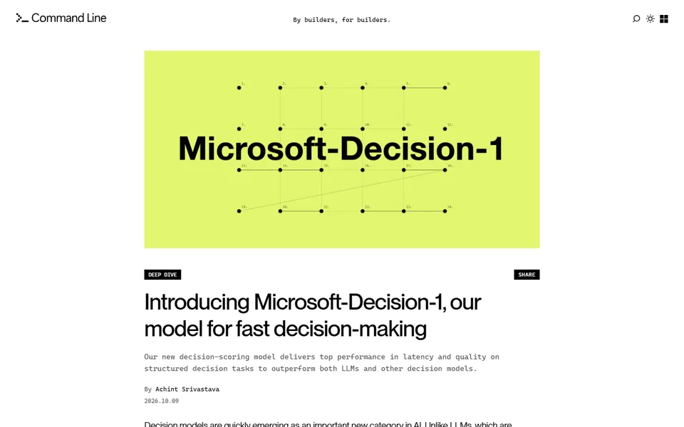
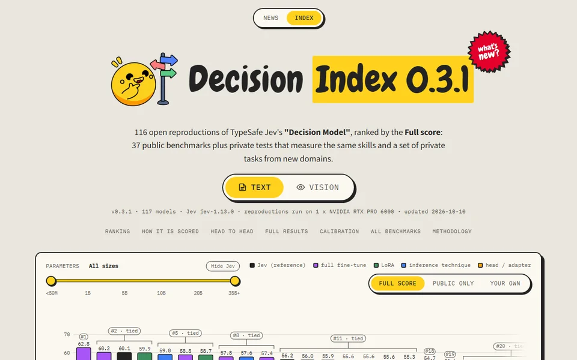
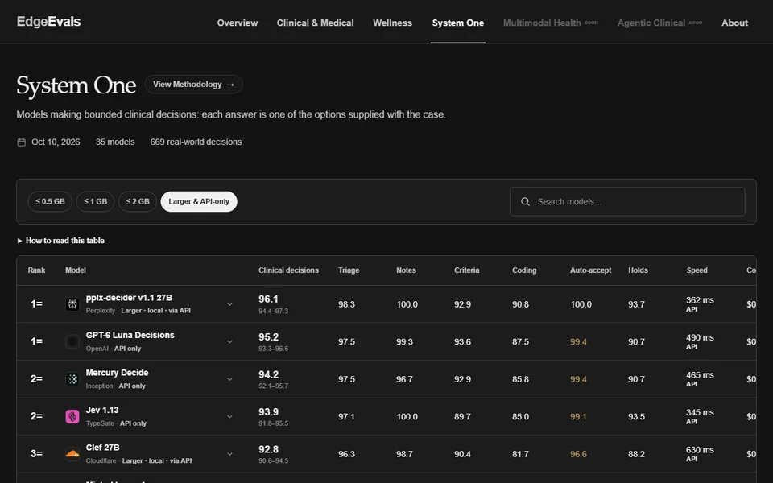

What Jev and Laya Can and Cannot Do
Can a System 1 model carry a safety decision?
To be completed by 7:00 PM.
Right: real Jev 1.13 answers on the synthetic scaffold report from Lab 1, recorded 10 Oct 2026. Left: a typical chat answer, written for this slide.
Both bars fill in one pass, while the generative model is still writing.
Synthetic report and illustrative values.
The model scores. Your rule decides.
Five lineages traced in our survey of System One models (in preparation). Nothing here is new on its own; Jev put them behind one simple contract.
360 open models in nine days
Open System One checkpoints on Hugging Face by release date, from the census in our survey (in preparation). Originals are new models; derivatives are copies, conversions and fine-tunes.


Big open models now reach Jev. Small ones, like Laya, are far behind.

Both boards put the same models near the top. Neither tests safety decisions.
So tonight we test them on safety data ourselves.
Can a System 1 model carry a safety decision?
Seven short labs. You predict first, every time.Seven short labs. In each one you commit to a guess before you see any model output.
Unit 1 northbound in light rain, left lane. Driver states she looked down at her phone for directions, looked up, and traffic had stopped. Unit 1 struck the rear of Unit 2. No injuries reported.
Was the driver distracted? Did the weather contribute?
That is exactly the job of the decision models you just met. A typed answer and how sure, nothing else.
Compare with the chat. Where did the class disagree most?
One construction report, three typed questions, two models. Same request, very different answers.
from laya import Router
router = Router() # downloads the open checkpoint once
state = ("Worker on level 3 scaffold. East guardrail missing. "
"Worker slipped, harness held, no injury.")
questions = {
"fall_hazard": {"type": "noul",
"instructions": "Does the report describe a fall hazard?"},
"harness_held": {"type": "noul",
"instructions": "Did fall protection stop the fall?"},
"injury": {"type": "noul",
"instructions": "Was anyone injured?"},
}
result = router.predict(state, questions)
Read the report again. Which of these three is wrong?
| Model | Typed decisions | CLINC-150 |
|---|---|---|
| DeBERTa-v3-large, fine-tuned on labels | 0.793 | 0.953 |
| Gemma-4-31B, generative, no labels | 0.741 | 0.942 |
| Jev 1.13, no labels | 0.732 | 0.913 |
| Model | Flips per 100 · fewer is better |
|---|---|
| Kev-9B | 6.5 |
| Jev 1.13 | 50.5 |
| Laya English | 91.3 |
Where labels exist, a fine-tuned classifier still wins. Without labels, a System 1 model is a strong, fast start.
Our benchmark, arXiv 2610.00346. Eight decision checkpoints in six families plus four open generative models and four classifier baselines, eight datasets.
These models can read a report and answer your yes or no questions in under a second.
These models cannot be trusted until you test them on your own reports.
You write the questions. We add gates, run them on one report, and read what comes back.
Unit 2 was stopped at the light on FM 1626. Driver of Unit 1 stated he felt dizzy and blacked out before the crash. Witness stated Unit 1 did not brake. Driver of Unit 1 transported to hospital by EMS.
Did the driver have a medical episode?
What kind of episode? Seizure, blackout, diabetic, cardiac, other.
How detailed is the narrative, from 0 to 3?
Post one yes or no question you would ask of this report.
For example, Was the driver of Unit 1 taken to the hospital?
A screen question opens or shuts a gate. Follow-up questions run only behind an open gate.
Fewer questions per report, and no detail asked of reports where it cannot apply.
"medical_episode": {
"type": "noul",
"instructions": "The narrative states that a driver had a
medical episode, such as fainting or a seizure."},
"medical_type": {
"type": "choice",
"instructions": "What kind of medical episode does the
narrative describe?",
"criteria": {
"seizure": "...", "loss_of_consciousness": "...",
"diabetic": "...", "cardiac": "...", "other": "..."}},
"gates": {
"medical_type": "medical_episode",
"drug_class": "drug_involved", ...}
| Questions | 27 |
| Yes or no (presence) | 16 |
| Choice (categorical) | 8 |
| Score (ordinal) | 3 |
| Behind a gate | 7 |
A gate opens when the screen question returns a probability above 0.5.
Instruction text shortened for the slide. Variables include medical episode, drugs, alcohol, hydroplaning, vehicle defect, fatigue, aggression, phone use, wrong way, animal, pregnancy.
| Narratives in scope | 5,018,080 |
| Screened with 10 questions | 499,500 |
| Coded with all 27 questions | 195,857 |
| Blinded human judgments | 2,416 |
| Jev 1.13 | 0.908 |
| Frontier generative model A | 0.967 |
| Frontier generative model B | 0.885 |
Phone use rises by 182 percent. Four of nine factors change rank.
arXiv 2609.24052. Jev 1.13 on 195,857 Texas narratives. F1 of 0.908 against 2,416 blinded human judgments.
A probability is only useful if 0.9 means right nine times in ten. We check that, and fix it when it fails.
The model says 0.90 on a hundred reports.
How many does it get right?
Launch poll 2 from the Polls tab now.
import numpy as np
from sklearn.linear_model import LogisticRegression
# p: model probabilities, y: human labels (0 or 1)
p = np.clip(p, 1e-4, 1 - 1e-4)
z = np.log(p / (1 - p)).reshape(-1, 1) # model log-odds
platt = LogisticRegression().fit(z, y) # learn slope and shift
p_new = platt.predict_proba(z)[:, 1] # recalibrated
| As returned by Jev | 0.0231 |
| After Platt scaling, held out | 0.0069 |
3.3 times smaller error, from labels you already need for the audit.
Recalibration fixes miscalibrated numbers. It cannot add information the model never had, which is why the pedestrian curve stays poor.
To reach 90 percent precision, what share of flagged reports must a person still read?
| Variable | Flags per year | Judged against coded fields | Judged against human labels |
|---|---|---|---|
| Alcohol | 20,262 | 100% | 5.1% |
| Hydroplaning | 13,114 | 100% | 0.0% |
| Wrong way | 7,958 | 100% | 72.2% |
| Fatigue | 7,798 | 100% | 0.1% |
| Medical episode | 5,880 | 100% | 14.4% |
The coded field is a poor yardstick. Measured against it, agreement looks worse by a median kappa of 0.26.
Crash narratives, well calibrated tails (arXiv 2609.24052). Pedestrian choices, stated 0.98 and right less than half the time. Typed decisions, Laya confidence carries little signal (arXiv 2610.00346).
The coded record and the officer's narrative describe the same crash. They do not always agree.
| Crash type | Rear end |
| Severity | Possible injury |
| Contributing factor 1 | Followed too closely |
| Contributing factor 2 | None |
| Distraction coded | No |
Unit 1 was traveling west on Loop 410 in moderate traffic. Driver of Unit 1 stated he was reading a text message when traffic slowed ahead. Unit 1 struck the rear of Unit 2. Driver of Unit 2 complained of neck pain.
The narrative shows about twice the phone use the form records. A second human check agreed on all fifteen factors.
Our pregnancy study (arXiv 2610.00213) read every narrative flagged by a keyword screen and estimated what the screen missed.
| Narratives in scope | 5,018,079 |
| Crashes documenting a pregnancy | 5,467 |
| 95 percent interval | 5,306 to 5,577 |
| Core keyword hits the model confirmed | 97.9% |
Yet that is only about 3 percent of the pregnant drivers vital statistics predict, and mostly the injured ones.
Our estimates have a 22 percent margin. Which spends effort better?
Reading all five million narratives barely helps. Four hundred more human-coded narratives do.
About twice the coded phone use, confirmed by a second human check (arXiv 2610.10321). Pregnancy found in 5,467 crashes on a form that never asks (arXiv 2610.00213).
Can a model that reads text stand in for a person walking in a crowd?
{"your_pace": "walking briskly",
"your_destination": "straight ahead",
"crowding": "open space around you",
"wall_on_your_left": "far away",
"wall_on_your_right": "one step away",
"space_directly_ahead": "clear for several steps",
"people_nearby": [
"ahead to your left, a few steps away:
pulling away from you, walking the same
way at your pace", "..."]}
The person did go straight.
Spacing, speed and body contact do not survive the translation into a sentence.
Illustrative values, not a model run.
| Logistic model on the same words | 0.966 |
| Always guess the base rates | 1.410 |
| Jev 1.13, zero shot | 1.923 |
| Repeat last second's rating | 0.956 |
| Logistic model on the same words | 0.70 |
| Jev 1.13, zero shot | 0.53 |
It says 0.98 and is right less than half the time. It never gets a hard turn right.
Adding its answers to the simple model improves it by at most 3.12 percent, and makes every pushing task worse.
Jülich 2013 corridors and the 2018 Wuppertal bottleneck experiment. About 3,000 decisions per corridor setting, 3,640 rated person-seconds for pushing.
Pedestrian study, in preparation. Zero-shot Jev 1.13 on Jülich corridors and a bottleneck experiment. Laya was not tested here.
8 ft excavation at Pier 3, no shoring or trench box. Laborer entered to clear a pump hose.
Girder G3, 0.5 mm diagonal crack near the east bearing, rust staining, bearing appears frozen.
12-inch cast iron main break near hydrant 44. Roadway undermined and sagging.
Kitchen fire, four-story apartment. No sprinkler system. One resident treated for smoke.
Pick a card, or bring a report from your own field. Post one typed question.
Can a System 1 model carry a safety decision?
Strong on what people wrote down. Weak where physics is squeezed into words. Never trusted before it is measured.
| 2609.24052 | Calibrated decisions at scale. Crash narratives into calibrated variables. |
| 2610.00213 | Pregnancy in crash narratives. A variable no form records. |
| in prep. | Calibrated decisions without crowd sense. A boundary study. |
| 2610.00346 | Benchmarking System One models for decision gates. |
| in prep. | A survey and census of System One models. |
| 2610.10321 | Estimating uncoded crash factors with Kumo Tabular and Jev. |
The Colab notebook from the chat runs the labs with Laya on a free CPU. No key needed.
Decision Index on Hugging Face (multimodalart). EdgeEvals System One. Our benchmark, arXiv 2610.00346.
Amir Rafe, Ph.D.
AIT Lab, Ingram School of Engineering
Texas State University
What would you ask a System 1 model in your own work?